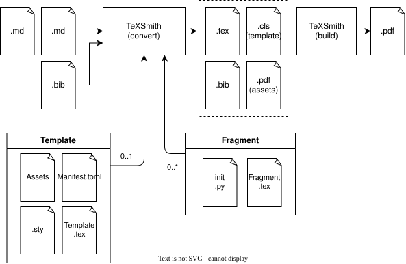

How does TeXSmith work?¶
TeXSmith ingests Markdown (.md), YAML (.yaml) and BibTeX
(.bib), then runs them through a conversion pipeline to produce LaTeX, Typst,
or a finished PDF.
Templates define the layout and expose slots that get filled with content from your sources. The template also relies on fragments — extra layers that add a bibliography, glossary, fonts, page geometry, or other typesetting options.

The shape of the pipeline¶
.md ──tmark.parse──▶ IR ──TeXSmith passes──▶ IR' ──tmark.resolve(loader)──▶ Resolved
pre: include · glossary · var · title · snippet ·
assets · doi · emoji · scripts
post: slots · headings · highlight
│
┌───────────────────────────────────────────────────────────────────┘
▼
tmark.write(IR', "latex" | "typst" | "html") ──▶ Body { text, map, requires }
│
└─▶ Requires → fragments → preamble; text → template slots; engines → PDF
Two rules keep the boundary honest. A function that needs a file, a clock, a
process or a socket is TeXSmith's (or hides behind a Loader). A writer
that needs to know the template, the font, the packages or the geometry is
asking for a fragment contract, not an option.
What lives where:
| Concern | Owner |
|---|---|
| Parsing, the IR, resolution, the canonical printer, the linter | tmark (Rust) |
| The LaTeX / Typst / HTML writers | tmark (Rust) |
| Templates, fragments, fonts, engines | TeXSmith |
| Includes, executed fences, diagram conversion, asset hashing | TeXSmith passes |
| Bibliography output (pybtex, DOI fetch, CSL) | TeXSmith |
| Cross-document inventory writing | TeXSmith |
| The CLI and the MkDocs companion | TeXSmith |
Internal pipeline¶
-
Collect and classify inputs. The CLI and
ConversionServiceaccept Markdown documents, optional front matter YAML, and bibliography files.split_inputspeels off.bib/.bibtex, treats a lone YAML file as the only document when needed, and normalises any provided front matter. When documents share front matter, it is deep-merged into eachDocument, withpress.*metadata validated up front to avoid surprises later. -
Parse to the IR.
tmark.parsereads the source and produces the intermediate representation: a typed tree with a committed JSON schema, plus the front matter and a source span for every node.texsmith.ir.modelis the generated Python mirror of that schema, so the Python side never hand-writes the node catalogue. Parse diagnostics — including the deprecation warnings of Migrating to TMark — land in the render'sDiagnosticSink. -
Run the
prepasses. A pass is a pure function(Document, PassContext) -> Documentover the generated models: it never mutates its input, returns the same object when it has nothing to do, and never raises — a failure becomes a visible literal in the output plus a diagnostic at the node's span. Mostprepasses need I/O, which is exactly why they are Python's. In their declared order:Pass I/O What it does includeyes splices {include}(file)and fenceinclude=sources, rebasing relative pathsglossaryvalidates the structured press.declare.glossarysection and declares one abbreviation per entry, so the prose substitutes the key and the backmatter lists itvarexpands {{ key }}moustaches against the front mattertitlepromotes the first heading to the document title snippetyes renders .snippetfences into preview figuresassetsyes converts and hashes images and diagrams (mermaid, draw.io, SVG) doiyes fetches pending DOIs into a generated .bibemojiyes picks the emoji rendering mode and its assets scriptsyes detects non-Latin runs and chooses fallback font families Order is declared, not implicit: each pass registers a
PassSpecwithafter=, andbuild_pipelineperforms a stable topological sort that raisesPassOrderErroron a cycle — so the table reads as a listing, not as a contract, and the constraints are what actually hold (assetsafterincludeandsnippet,emojiafterassets,scriptsaftervarandemoji). A template or plugin registers its own the same way, and aprepass declaredafterapostpass is refused.DEFAULT_PIPELINEintexsmith.passesis the list the CLI runs. -
Bind the template and attributes.
bind_templateresolves which template runtime to use and which slots exist. Template attributes declared inmanifest.tomlare merged in a strict order: template defaults → fragment defaults → front matter (press.*) → CLI/session overrides. Attribute ownership is enforced so two fragments (or the template) cannot claim the same attribute. -
Resolve once.
tmark.resolvewalks the whole document with aLoadersupplied by TeXSmith and turns every anchor, reference, citation and counter item into a resolved label: "Figure 3", "FW-01", a citation key, a glossary entry, a cross-document inventory hit. Resolution happens once, over the whole document, so numbering is consistent across slots and unresolved references are reported with their span instead of silently disappearing. -
Run the
postpasses. These only slice the block list or compute per-body options, so theResolvedof the whole document stays valid:slotssplits the tree into the template's slots,headingscomputes the per-slot heading offset, andhighlightrenders Pygments payloads for the LaTeX backend. -
Write one body per slot.
tmark.write(ir, backend)emits the body text forlatex,typstorhtml, together with a source map (for SyncTeX) and aRequiresrecord.Requiresis the writer's demand on the template, and it is what makes the boundary work: the packages the body needs, thets-*fragments that must provide its contract macros, whether shell escape is required, the assets to copy, whether a bibliography exists, and the cited keys, acronyms, index registries and counter series actually used. -
Activate fragments from
Requires. The unionedRequiresof every slot drives fragment activation: a body that emits\tscalloutpulls ints-callouts, one that emits\tsindexpulls ints-index, and so on. A macro the writer names, a fragment must define — the check is by construction rather than by sniffing the rendered LaTeX. See Contract macros. -
Fonts, bibliography and index. The script usage collected by the
scriptspass chooses per-script font families and emits font-switching commands;--fonts-infosurfaces the detected scripts and counts. Only the cited keys are written to the generatedtexsmith-bibliography.bib, keeping outputs lean. The index registries listed inRequiresdecide which\printindexblocks thets-indexfragment drops into the backmatter. -
Template wrap and emission. Slot bodies are merged back into the template entrypoint by
wrap_template_document, alongside template/fragment attributes, required assets, and optional manifest/debug artefacts. The resultingTemplateRenderResultcarries the main.tex(or.typ) path, per-fragment outputs, the bibliography path, the selected engine and its shell-escape requirement, ready for Tectonic, latexmk or the Typst compiler to produce the final PDF. Each conversion also publishes its.refs.jsoninventory for other documents to cite.
Inspecting a stage¶
tmark parse report.md # the IR as JSON, diagnostics on stderr
tmark check --strict report.md # parse, resolve and lint
tmark write --to latex report.md # the body a slot receives (--map for Requires)
texsmith report.md --debug # keep the intermediate artefacts